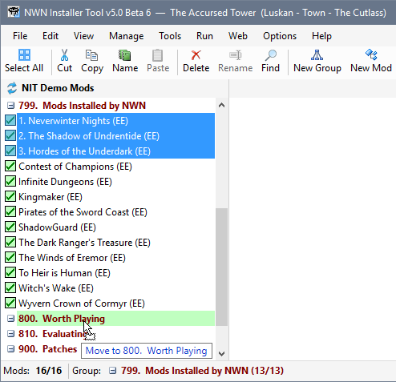
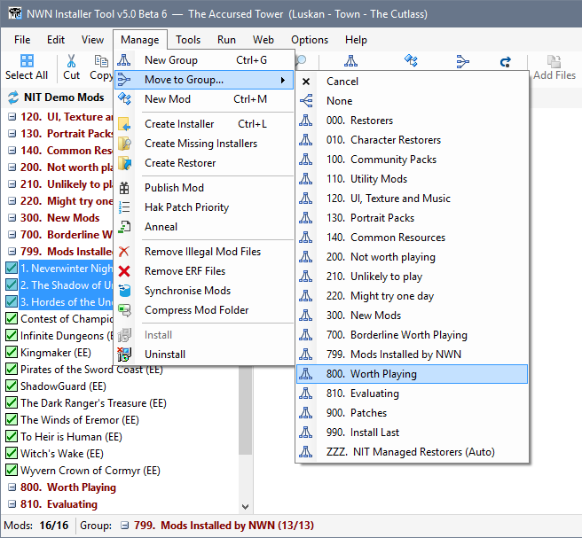
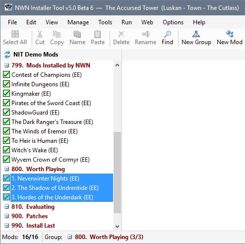
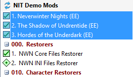

Use this procedure to move Mods from one Group to another...



|
|
|
Note: You can also click None from Group drop down list if you want to ungroup the selected Mods.  Ungrouped Mods always appear at the top of your Mod list, which means they will have the lowest priority when the Installer Tool is dealing with file conflicts. |
Moving Mods from one Group to another